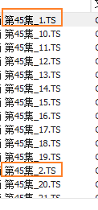
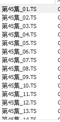

不知道大家有没有遇到这样的情况，比如视频合并时文件名没有按照正常顺序排列，像这样

可见，文件名排序是乱的。这个样子合并出来的视频一定也是乱的。所以得想办法把文件名修改一下，让软件读取出正确的顺序。闲话少说，上代码。
"""
注意：一、文件名除去扩展名必须以 '_' + 数字 结尾。
二、convert.py 放在文件目录。
三、目录中不能有多余文件
主要算法：
根据最大数字的位数添加0
例如,如果最大数字为123,那么位数为3位,
1就要变成001、2变成002、23变成023,依次...
"""
import os
li = []
new_li = [] # 新文件名
null_li = [] # 不标准的文件名
filenames = os.listdir('./')
# 得到数字的最大位数
for filename in filenames:
tmp = os.path.splitext(filename)[0] # 得到文件名
if('_' in tmp): # 找到数字前的标志
num = tmp.split('_')[-1]
li.append(num)
else:
null_li.append(filename)
max_len = len(max(li, key=len))
# ~ print(max_len)
# 新文件名
for filename in filenames:
name = os.path.splitext(filename)[:-1] # 得到文件名
name = '_'.join(name)
ext = os.path.splitext(filename)[-1] # 得到扩展名
if('_' in name): # 找到数字前的标志
name1 = name.split('_')[:-1]
name1 = '_'.join(name1) #文件名
num = name.split('_')[-1]
quantity = max_len - len(num)
name2 = '0' * quantity + num #数字名
filename = name1 + '_' + name2 + ext
new_li.append(filename)
# ~ new_li.sort()
# ~ print(filenames)
# ~ print('\n')
# ~ print(new_li)
# 检查是否有不规范的文件名
if(len(filenames)-1 != len(new_li)):
null_li.remove('convert.py')
null_li = '、'.join(null_li)
print("error: \""+ null_li + "\" 不以 '_' + 数字 结尾。")
exit()
# 修改文件名
i = 0
for oldname in filenames:
if (oldname != 'convert.py'):
os.rename(oldname,new_li[i])
print(oldname,'======>',new_li[i])
i+=1
其中注意事项，在上述代码里也说明了。运行成功后，再次查看

可见，视频已经按照顺序排列好了。